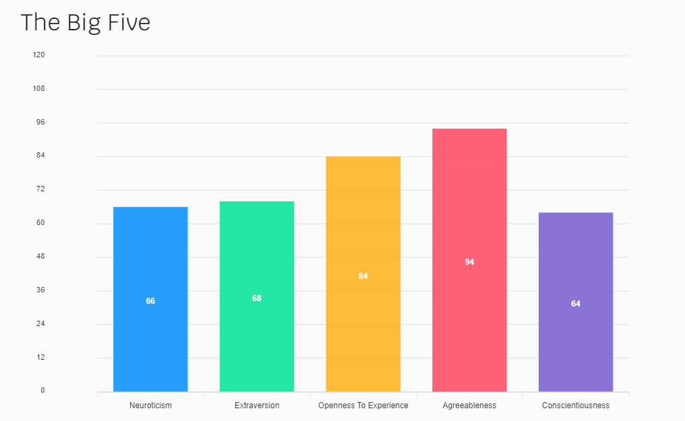

About Me
I was born in India and migrated to Australia in early 2009. I am 18 years old and i graduated from highschool in 2019. Fun fact about me is that i started Bachelor of Aviation at Swinburne in 2020 and fortunately got to fly solo twice in a Cessna 172 aircraft. However, i found out the career of a pilot was not the best interest for me so i dropped the course and am now studying Bachelor of Information technology. My hobbies are gaming with my friends, playing and watching cricket and keeping up with the latest innovations in technology, hence why i thought Information Technology would be a good career for me.
My interest in IT started when a friend told me to get a gaming PC so that i can play games with him, eventually i started looking around on Youtube and discovered how to build one myslef. After that i have been keeping upto date with all the markets in Technology including Smartphones, Laptops, PC anyhting and everything Tech-related.
I left Swinburne to join RMIT via Open uni becuase it was the only course which started in August (when i left Swinbunre) that i could do to be able to pathway into a course in Monash Uni, Bachelor of Business and IT. In this course i expect to learn the basics of IT and Programming so that the completion of these units can get me into Monash and also give me a basic idea of what IT is really like.
Personal Profile:
MBTI Test Restults: Mediator INFP-T
Learning Style Test Result: Visual Learner
Big Five Personality test: 
These resutls indicate to me that i am an introverted person but very creative and have good ideas to offer. This means that while i may be shy and quite in a group, i'd have a lot of ideas to share and solutions to offer. Also, i may not be the best presenter in the group as my public speaking abilities may hold me back. I can take this into account by trying to speak up and point out things that others mught not pick up on or just put myself out there and offer my opinions to the group.